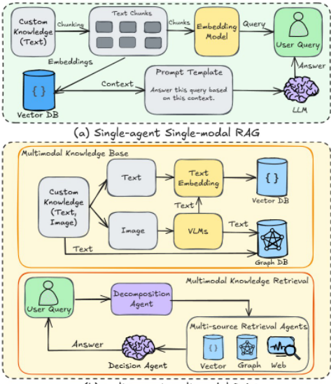
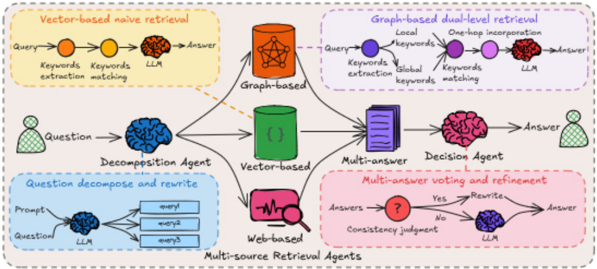
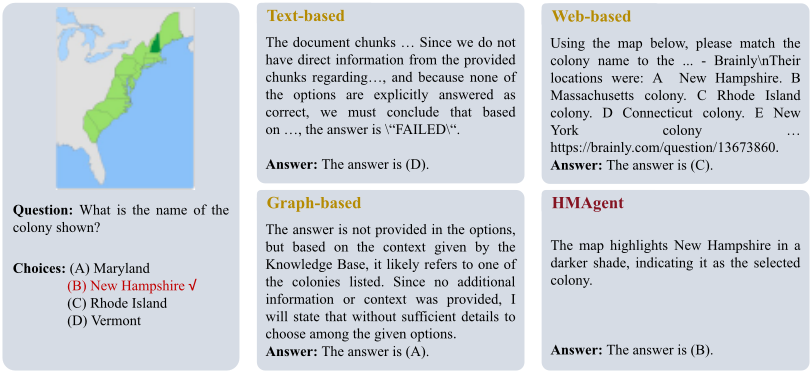

HM-RAG：分层多 Agent 多模态检索增强生成框架
传统单 Agent、单模态 RAG 难以处理需要跨异构数据源协同推理的复杂查询。HM-RAG 提出三层多 Agent 架构：Decomposition Agent 通过 LLM 提示判断并拆解多意图问题；三个可插拔检索 Agent 并行从 vector、graph（LightRAG 构建的 MMKG）与 web（Google Serper API）三类数据源检索；Decision Agent 用 ROUGE-L+BLEU 一致性投票融合多源答案，分歧超阈值时触发 Expert Model Refinement。多模态预处理阶段用 BLIP-2 将图像转写为文本，再统一构建向量库与多模态知识图谱。在 ScienceQA 上取得 93.73% 的 zero-shot SOTA 准确率，CrisisMMD 上达 58.55%；消融显示 Decision Agent 最关键，移除后准确率下降 10.82%。
传统单 Agent、单模态 RAG 难以解决需要在异构数据生态（结构化、非结构化、图谱数据）间协同推理的复杂查询：文本 RAG 无法处理视觉内容，image-based RAG 难以建立跨模态关联，graph-based RAG（如 GraphRAG、LightRAG）在抽象建模中牺牲细粒度文本保真度，且现有实现多依赖单源检索，无法同时利用 vector、graph 与 web 数据源，导致信息不完整或过时。
HM-RAG 采用三层多 Agent 架构：(1) 多模态知识预处理——用 BLIP-2 VLM 将图像转写为文本描述并做上下文精炼，与原始文本一起经 LightRAG 构建向量库与多模态知识图谱（MMKG，图谱构建用 DeepSeek-R1-70B，检索适配用 Qwen2.5-7B）；(2) Decomposition Agent——先用二分类提示判断问题是否为多意图，再用结构化提示将复杂问题拆解为 2-3 个逻辑连贯的子问题；(3) 三个可插拔检索 Agent——vector（余弦相似度 top-k）、graph（LightRAG 局部/全局双层图遍历）、web（Google Serper API）并行检索，遵循统一通信协议、可独立替换；(4) Decision Agent——对三路答案生成摘要后用 ROUGE-L+BLEU 加权一致性投票，相似度超阈值则用轻量 LLM 精炼，低于阈值则触发 Expert Model Refinement（GPT-4o/GPT-4/CoT-LM）融合多源证据生成最终答案。
在 ScienceQA 与 CrisisMMD 上，相比 baseline RAG 系统答案准确率提升 12.95%，问题分类准确率提升 3.56%，并在两个数据集的 zero-shot 设定下取得 SOTA
ScienceQA：平均准确率 93.73%，超 LLaMA-SciTune 4.11%、超 GPT-4o 2.82%；相比 vector/graph/web 单源 RAG baseline 分别绝对提升 12.95%/12.71%/12.13%；超人类专家表现 6.03%
CrisisMMD：平均准确率 58.55%，较最强 baseline GPT-4o 绝对提升 2.44%、较纯文本 Qwen2.5-72B 提升 3.44%；Task 1 准确率 72.06%，超 GPT-4o 3.86%
消融实验（ScienceQA）：移除 Decision Agent 性能下降最多（10.82%，图像任务降 21.56%、社会推理任务降 19.60%）；移除 web 检索 Agent 平均降 5.63%；完整系统 93.73%，比最佳消融配置高 2.44%
相比单 Agent 单源 RAG 与已有 graph-based RAG（GraphRAG、LightRAG），主要区别在于：(1) 分解-并行多源检索-决策融合的三层 Agent 分工；(2) 检索能力以统一协议封装为 plug-and-play 模块，可无缝接入或替换新数据模态；(3) 用 ROUGE-L+BLEU 一致性投票量化多源答案分歧，按阈值决定轻量精炼或专家模型兜底，而非简单拼接上下文；(4) 图像先经 VLM 文本化再统一入库，使 vector 与 graph 检索天然携带跨模态信息。
相关度级别：high
命中能力域：3.1 上下文工程与记忆 | 3.3 Agent 架构与工具使用 | 3.4 多智能体协作
理由：论文直接命中团队三个核心能力域：3.1（RAG/多源检索与上下文组织是论文主题，含向量库、知识图谱、web 三路上下文的构建与融合）、3.3（分层 Agent 架构、可插拔工具模块、web API 工具调用）、3.4（分解-检索-决策的多 Agent 分工与结果融合决策）。其一致性投票+专家精炼的兜底模式、统一协议的可插拔检索模块设计，对团队构建生产级知识库问答与多 Agent 系统有直接工程参考价值；且代码开源、各组件（LightRAG、Serper、BLIP-2）可独立替换，落地门槛可控。
建议动作：深入精读并做内部分享
arXiv:2504.12330v1 [cs.CL] 2025年4月13日
HM-RAG：分层多智能体多模态检索增强生成（Hierarchical Multi-Agent Multimodal Retrieval Augmented Generation）
Pei Liu 1 , 2 , Xin Liu 2 , Ruoyu Yao 2 , Junming Liu 1 , Siyuan Meng 1 , Ding Wang 1 ∗ , Jun Ma 23 ∗
1 上海人工智能实验室 2 香港科技大学（广州） 3 香港科技大学
pliu061@connect.hkust-gz.edu.cn wangding@pjlab.org.cn jun.ma@ust.hk
检索增强生成（Retrieval-Augmented Generation, RAG）通过外部知识增强大语言模型（Large Language Models, LLMs），但传统的单智能体 RAG 在解决需要跨异构数据生态系统进行协同推理的复杂查询方面，仍然存在根本性的局限。我们提出了 HM-RAG，一种新颖的分层多智能体多模态 RAG 框架，率先引入协作智能，以实现跨结构化、非结构化和基于图的数据的动态知识合成。该框架由包含专门化智能体的三层架构组成：Decomposition Agent（分解智能体）通过语义感知的查询重写和模式引导的上下文增强，将复杂查询剖析为上下文连贯的子任务；Multi-source Retrieval Agents（多源检索智能体）使用为向量、图和基于 Web 的数据库设计的即插即用模块，执行并行的、面向特定模态的检索；Decision Agent（决策智能体）采用一致性投票整合多源答案，并通过 Expert Model Refinement（专家模型精化）解决检索结果中的分歧。该架构通过结合文本、图关系和源自 Web 的证据，实现了对查询的全面理解，在 ScienceQA 和 CrisisMMD 基准测试上，相比基线 RAG 系统，答案准确率显著提升了 12.95%，问题分类准确率提升了 3.56%。值得注意的是，HM-RAG 在这两个数据集的零样本（zero-shot）设置下均取得了最先进（state-of-the-art）的结果。其模块化架构确保了新数据模态的无缝集成，同时保持严格的数据治理，在应对 RAG 系统中多模态推理与知识合成的关键挑战方面取得了重大进展。代码已发布于 https://github.com/ocean-luna/HMRAG。
检索增强生成（RAG）、多模态表示、多智能体系统、多源 RAG
在数据快速激增的时代，从异构数据源中高效检索相关信息的能力已成为现代信息系统的基本支柱 [14]。融合文本、图像、向量化数据和基于网络的内容的多模态检索系统，正在电子商务、医疗健康和科学研究等领域变得不可或缺 [59]。这些系统能够无缝导航多种数据类型，使用户能够跨多种模态获得可操作的洞察。然而，尽管近年来取得了显著进展，多模态检索仍然面临重大挑战。其复杂性源于需要协调查询类型的多样性、数据格式的异构性以及图1：( 𝑎 ) 单智能体单模态 RAG 与 ( 𝑏 ) 多智能体多模态 RAG 的对比。多智能体多模态 RAG 通过将多模态数据转换为向量数据库和图数据库来对其进行处理。它利用跨向量数据库、图数据库和基于网络的数据库的多源检索，实现更全面、更高效的信息检索。这种先进的方法使多智能体多模态 RAG 在处理复杂查询和多样化数据类型方面取得卓越性能，从而有别于能力较为有限的单智能体单模态 RAG。

检索任务的不同目标，所有这些都需要复杂精密的解决方案来弥合数据表示与用户意图之间的鸿沟。
检索技术的演进历来以单模态架构为中心，在这类架构中，查询和检索机制在单一预定义模态内运行 [3, 33]。尽管基于文本的检索增强生成（RAG）系统在处理语言信息方面已展现出稳健的性能 [43]，但其无法处理视觉内容的缺陷推动了基于图像的 RAG 方法的发展 [7, 25, 41]。然而，当前的多模态实现面临一个关键瓶颈：尽管基于图像的 RAG 系统擅长处理视觉内容，但它们往往无法在视觉元素与文本上下文之间建立连贯的跨模态关联。这一局限在多模态问答中尤为突出，因为此类系统必须将视觉感知与文本语义相整合，才能生成与上下文相关的响应。
近年来，为增强对文本相互依赖关系的建模，研究者提出了基于图的检索框架，其以知识图谱的构建为基础，代表工作包括 GraphRAG [12] 和 LightRAG [18]。这些方法被进一步扩展到多模态输入的处理 [37]，其中图结构被用于准确捕捉跨模态关系。尽管取得了这些进展，基于图的方法仍面临一种固有的权衡：虽然它们能够有效捕捉高层模态交互，但往往牺牲了细粒度信息的保真度。这在需要精确文本片段检索的场景中成为问题，因为图建模固有的抽象过程会模糊对细致分析至关重要的细粒度文本细节。
与此同时，人们还注意到另一个关键挑战，即如何调和不同模态的互补优势 [13, 15, 31]。文本模态擅长编码细粒度的语义细节和概念关系，相比之下，视觉模态则能够捕捉空间上下文并促进对空间关系的理解。当前的特定模态系统 [33, 54] 在跨模态综合方面表现出关键性局限，其检索结果要么过度偏重文本精度，要么局限于视觉模式识别。这种模态隔离在异构数据环境中造成了系统性脆弱性，由于缺乏跨模态对齐协议，检索操作过程中存在关键信息丢失的风险。例如，在以文本为中心的系统中，视觉查询无法将概念性问题映射到说明性元素；而在面向视觉的框架中，文本密集型查询则缺乏词汇消歧机制。这些架构上的缺口凸显了对能够将细粒度语义细节与跨模态上下文连贯性相协调的框架的迫切需求。
为应对这些挑战，我们提出了层次化多智能体检索增强生成（Hierarchical MultiAgent Retrieval-Augmented Generation, HM-RAG），这是一种通过协调多智能体协作来增强多模态检索的新型框架。HM-RAG 采用三层架构，由专门化的 Agent 在 RAG 流水线中运行。Decomposition Agent（分解智能体）分析查询意图并动态改写请求，以确保跨模态兼容性。Multi-Source Retrieval Agent（多源检索智能体）通过跨多种数据源（包括向量、图和基于 Web 的数据库）的轻量级多模态检索实现并行知识获取。最后，Decision Agent（决策智能体）利用领域特定的验证策略对候选响应进行综合与精炼，以确保准确性和连贯性。这种层次化设计通过结构化的 Agent 交互系统地编排文本-图像证据整合，从而实现分层推理。与传统方法不同，HM-RAG 将查询分解、并行化信息检索与专家引导的答案精炼相结合，以实现高效且与上下文相关的响应。我们的贡献总结如下：
检索增强生成（RAG）系统已取得显著演进，以增强其多模态推理能力 [16, 20, 33, 47]。最初，基于文本的 RAG 系统将大语言模型（LLMs）与外部文本知识相结合，通过检索相关文本片段来提升问答性能 [4, 27, 57]。然而，随着视觉信息丰富的文档日益普遍，纯文本系统的局限性变得显而易见，这推动了基于图像的 RAG 方法的发展 [5, 6, 38, 46]。虽然这些方法旨在为大型视觉-语言模型（VLMs）检索视觉内容，但由于其检索过程在很大程度上相互独立，这些方法在有效整合文本与图像模态方面面临挑战，从而阻碍了对二者相互关系的深入理解。
为应对这些挑战，基于图的 RAG 系统应运而生，其利用结构化知识表示来捕获模态间与模态内的语义关系 [9, 18, 28, 44]。这些系统利用向量空间嵌入和拓扑关系对复杂的文档结构进行建模，从而能够检索语义连贯且超越简单文本片段的上下文 [12, 42, 53]。基于图的 RAG 系统在理解文本与图像之间的关系以及提取文本自身内部关系方面尤为有效 [37]。然而，当前的 RAG 实现通常依赖单一来源检索，这限制了其应对需要同时处理向量、图和基于 Web 的数据库的复杂查询的能力 [19]。这一局限在需要私有数据检索和实时更新的应用中尤为显著，因为在这类应用中，缺乏集成的多源检索能力可能导致信息不完整或过时。为了充分发挥每种数据模态的优势并满足动态且异构的数据环境的需求，RAG 系统必须不断演进，以支持协同的多源检索与综合。
通过将检索机制与生成模型相结合，RAG 已成为知识密集型任务的关键范式，显著增强了语言模型的能力。然而，传统的 RAG 实现通常依赖静态流水线，难以应对多模态查询处理 [8, 48]。近年来，基于 Agent 的 RAG 架构通过提升系统模块化程度和运行灵活性，解决了这些局限 [11, 21, 29]。面向 Agent 的方法将查询处理分解为语义解析、跨模态检索和上下文感知生成等专门化组件，从而在保持整体适应性的同时实现针对性优化。PaperQA [32] 便是这一思路的典型示例，它利用学术文献生成基于证据的回答，减少了科学应用中的幻觉。
在此基础上，FLARE [30] 等主动式 RAG（Active RAG）方法通过前瞻性检索引入时间动态性，提升了长文本生成的性能。尽管取得了这些进展，多模态整合方面的挑战依然存在。新兴的动态 RAG（Dynamic RAG）方法 [49, 50] 提出了实体感知的增强策略，可动态融入检索到的实体表示，在保持语义连贯性的同时缓解上下文窗口的限制。我们的 HM-RAG 框架通过分层多智能体架构综合了这些创新，充分利用大语言模型（LLM）的语义理解能力。这一设计支持动态查询适配与多模态检索，为跨多种数据模态的复杂信息检索与生成任务提供了优化解决方案。通过整合这些进展，HM-RAG 应对了多模态推理与知识综合中的关键挑战，为构建更健壮、更具适应性的 RAG 系统铺平了道路。
我们提出 HM-RAG，一个旨在应对 RAG 系统中复杂挑战的新型框架。如图 2 所示，HM-RAG 具有创新的多智能体、多模态架构，配备专门负责信息抽取与多源检索的 Agent。给定自然语言问题 𝑞 和参考文档 D，RAG 从 D 中检索语义相关的内容，并将其与生成式语言模型相集成，从而生成严格基于 D 的答案。这一方法推进了多模态问答与多智能体 RAG 的能力。后续章节将对 HM-RAG 的架构设计进行详细阐述。通过这一系统性描述，我们阐明了该框架在有效整合与利用多模态信息和多源检索方面的核心机制，最终实现 RAG 应用准确性的提升。
本节聚焦于多模态数据处理，旨在将文本数据与视觉图像转换为向量和图数据库表示，以增强检索操作。我们的方法采用视觉语言模型（VLM）将视觉信息转码为文本表示，随后将其与原始文本语料库整合，共同构建向量数据库和图数据库。
3.1.1 多模态文本知识生成。传统的以实体为中心的多模态知识抽取方法依赖于预定义的类别边界，限制了其识别新颖视觉概念的能力。我们利用 BLIP-2 的框架 [34] 来发挥预训练 VLM 的开放词汇潜力。基于广义的视觉到语言转换范式：
其中，视觉编码器 E 𝑏𝑙𝑖𝑝 2 从输入图像 𝐼 𝑣 中提取特征，跨模态对齐模块 𝑓 𝑎𝑙𝑖𝑔𝑛 则桥接视觉与语言语义。我们的框架通过利用原始文本数据的上下文精炼机制，解决了机器生成描述过度简化的关键局限，特别是针对 BLIP-2 输出过度凝练、缺乏视觉特异性的问题。
该过程分为三个协同阶段。分层视觉编码：通过成熟架构 [10, 22, 39] 生成补丁嵌入（patch embeddings）𝑉 𝑖 ∈ R 𝑑 𝑣 × 𝑁 𝑝。跨模态交互：可学习查询 𝑄 𝑖 ∈ R 𝑑 𝑞 × 𝐿 𝑞 通过缩放点积注意力关注视觉特征，动态加权空间语义相关性。上下文感知的文本生成：将来自先前描述 𝑇 𝑖,𝑡 𝑣 的潜在文本特征与跨模态表示相融合，以进行自回归解码。此阶段的上下文精炼增强了语义对齐，使最终输出 𝑇 𝑣 在描述歧义性和词汇稀疏性方面实现了可测量的降低。
随后，通过将原始文本输入与生成的文本化内容进行系统性整合，形成由此得到的多模态文本知识库。
其中，𝑇 对应源文本语料库，𝑇 𝑚 表示通过异构融合过程形成的多模态文本聚合。
3.1.2 多模态知识图谱构建。我们通过将 VLM 增强的描述与基于大语言模型（LLM）的结构化推理相协同，构建多模态知识图谱（MMKG）。基于 VLM 生成的精炼视觉描述 𝑇 𝑣，并可选地与外部文本知识 𝑇 融合，我们采用 LightRAG 框架 [18] 来实现高效的多跳推理与动态知识整合：
LightRAG 通过混合抽取策略处理多模态输入。实体-关系抽取（Entity-Relation Extraction）：专用函数 𝑓 将输入分解为实体 𝐸 = { 𝑒 1 , · · · , 𝑒 𝑛 } 和关系三元组 𝑅 = {( ℎ 𝑖 , 𝑟 𝑖 , 𝑡 𝑖 )}，其中 ℎ, 𝑡 ∈ 𝐸 表示头/尾实体，𝑟 ∈ 𝑅 表示关系。双层推理增强（Dual-level Reasoning Augmentation）：双尺度检索机制 𝑅𝑒𝑡𝑟𝑖𝑒𝑣𝑒 𝑔𝑙𝑜𝑏𝑎𝑙 + 𝑙𝑜𝑐𝑎𝑙 在推理过程中动态获取相关三元组；全局检索识别主题聚类，而局部抽取则聚焦于特定实体的关联。
所构建的多模态知识图谱（MMKG）𝐺 = ( 𝐸, 𝑅 ) 将知识形式化为三元组 ( ℎ, 𝑟, 𝑡 )，其中实体既涵盖来自 𝑇 𝑣 的视觉概念，也涵盖来自 𝑇 的文本知识。至关重要的是，视觉数据的存储位置在图构建过程中被嵌入其中，从而实现跨模态接地。该架构建立了一个双向知识增强框架：语言模型通过嵌入在 𝐺 中的视觉-语义关系实现视觉情境化推理，而视觉-语言模型则通过持续的多模态整合动态更新知识嵌入，并通过表示一致性约束有效降低幻觉发生的概率。

分解 Agent（Decomposition Agent）是所提出框架的关键组件，旨在将复杂的多意图用户查询分解为连贯且可执行的子任务。该 Agent 解决了传统系统的一个关键局限：传统系统通常难以处理需要跨多个数据源进行联合推理的复合查询。通过利用层次化解析机制，分解 Agent 能够识别用户查询的内在结构，并将其分解为原子单元，每个原子单元分别针对特定的数据模态或检索任务。
所提出的框架分两个阶段运行，两个阶段均由面向特定任务的大语言模型（LLM）提示策略驱动。分解必要性判断。该 Agent 首先使用一个二元决策提示来判断输入问题 𝑄 是否包含多个意图，该提示指示 LLM 将其分类为单意图或多意图。若输出为多意图，则 𝑄 进入分解流程；否则，直接返回问题 𝑄。意图分解。LLM 将 𝑄 分解为候选子问题 𝑞 = { 𝑞 1 , · · · , 𝑞 𝑛 }
使用如下结构化提示：“根据原始问题的意图，将原始问题的推理步骤分解为2到3个简单且逻辑相连的子问题，同时保留原始问题中的关键词。”该提示受 [35] 启发。
我们提出了一种模块化的多智能体检索框架，该框架通过标准化接口动态组合异构的多模态搜索策略。通过将检索功能解耦为三个专用 Agent——基于向量的检索 Agent、基于图的检索 Agent 和基于网络的检索 Agent——系统在确保跨多样化搜索场景互操作性的同时，实现了与领域无关的适应性。每个 Agent 遵循统一的通信协议，使向量语义搜索、图拓扑探索和实时网络检索能力得以无缝集成。这种设计使每个检索 Agent 都能作为即插即用组件运行，确保它们可以在不影响整体系统性能的情况下被轻松集成或替换。这种模块化不仅增强了灵活性，还保持了面向特定任务的优化目标，使该框架能够高度适应各种应用和数据模态。
3.3.1 面向细粒度信息的基于向量的检索 Agent。该 Agent 利用一种朴素检索架构 [18] 来高效搜索非结构化文本语料库。给定用户查询 𝑞，系统首先使用编码器 E 𝑡𝑒𝑥𝑡 计算其语义嵌入 ℎ 𝑞：
其中 ℎ 𝑞 ∈ R 𝑑 表示查询在 𝑑 维向量空间中的嵌入。
接下来，系统使用余弦相似度计算查询嵌入 ℎ 𝑞 与所有文档嵌入 ℎ 𝑗 之间的语义相似度：
其中 𝑗 ∈ [ 1 , 𝑀 ]，𝑀 为文档总数。相似度得分 𝑠 𝑗 量化了每个文档与查询的匹配程度，构成了检索文档排序的基础。
基于相似度得分，系统检索出 top𝑘 个最相关的文档：
其中 R 𝑘 表示检索到的前 top𝑘 个上下文组成的集合，确保只有最相关的信息被用于后续处理。
随后，语言模型通过受约束解码，以检索到的上下文为条件生成答案 A 𝑣：
其中 P 表示生成过程，该过程将查询 𝑞、检索到的上下文 { 𝑐 1 , · · · , 𝑐 𝑘 } 以及额外的上下文信息拼接起来，以产生最终答案。
具体而言，在给定查询 q 和检索上下文 R 𝑘 的条件下生成 token 序列 y 的条件概率被建模为：
其中 𝑝 𝑙𝑚 表示语言模型自回归生成过程中某个 token 的条件概率，确保生成的答案在上下文上连贯一致。
此外，注意力机制将检索到的内容显式地纳入生成过程：
3.3.3 面向实时信息的基于 Web 的检索 Agent。Web 检索组件是信息检索与自然语言生成之间的关键桥梁，能够显著增强所生成文本的语义保真度与事实依据。我们的工作采用 Google Serper API。该系统通过向 Google 搜索引擎发送参数化的 API 请求来获取知识。对于输入查询 𝑞，检索过程形式化表示为：
其中 𝜃 𝑠𝑒𝑎𝑟𝑐ℎ 指定搜索配置参数。我们采用如下设置：𝜃 𝑠𝑒𝑎𝑟𝑐ℎ = { 𝑛𝑢𝑚 𝑟𝑒𝑠𝑢𝑙𝑡𝑠 = 𝑘, 𝑙𝑎𝑛𝑔𝑢𝑎𝑔𝑒 = 𝑒𝑛, 𝑡𝑦𝑝𝑒 = 𝑤𝑒𝑏 }。该 API 返回结构化结果 A 𝑤 = { 𝑎 𝑖 } 𝑘 𝑖 = 1，每条结果包含标题、摘要片段、URL 以及位置排序元数据。
Google Serper 框架在实际部署场景中通过三种主要运行模式展现出尤为突出的效能，每种模式分别应对现代知识感知系统的关键需求。首先，实时事实验证模块通过神经记忆探询计算事实有效性得分。其次，归因感知的生成协议通过双阶段注意力路由确保可追溯性。第三，自适应查询扩展机制通过差异化词项加权来解决词汇失配问题。
数据集。我们在两个涵盖不同模态配置的多模态推理基准测试（benchmark）上开展实验，包括复杂问答（ScienceQA）和危机事件分类（CrisisMMD）。
ScienceQA [40]。该数据集是首个面向科学问答的大规模多模态benchmark，涵盖3个核心学科（自然科学、社会科学和形式科学）。该数据集包含21,208个经过精心整理的示例，按层级组织为26个主题、127个类别和379种不同的推理技能。每个实例将文本问题与可选的视觉上下文（示意图、图表或照片）相结合，并以均衡的方式划分为12,726个训练样本、4,214个验证样本和4,268个测试样本。
遵循LLaVA [36]中确立的评估协议，我们报告所有测试样本上的平均准确率，以评估模型在多模态理解和多步科学推理方面的性能。值得注意的是，34.6%的测试问题需要同时处理视觉与文本信息才能得出正确答案。
CrisisMMD [2]。该数据集为灾害响应应用提供了一个具有挑战性的多模态数据集合，包含约35,000条来自真实危机事件、同时含有视觉与文本内容的社交媒体帖子。它具备完善的标注体系，涵盖七个不同的灾害类别和四个细粒度的严重程度等级。其独特价值在于捕捉了真实的用户生成内容，保留了危机传播中固有的自然噪声模式和复杂的跨模态关系。这些特性使其特别适合评估零样本（zero-shot）适应模型，因为在该benchmark上的成功表现与动态应急场景中的实际部署能力直接相关，而此类场景中通常无法获得干净的数据和明确的模态对齐。
实现细节。我们使用DeepSeek-R1-70B进行动态图构建，并通过Qwen2.5-7B的参数适配框架优化LightRAG的混合检索机制，这与VaLik [37]保持一致。在决策细化阶段，我们采用GPT-4o处理ScienceQA数据集，并采用GPT-4分析CrisisMMD数据集。所有多模态推理工作流均在单块NVIDIA A800-80GB GPU上运行，通过内存优化的并行化方式，无缝支持图神经网络计算与检索增强生成（RAG）任务的并发执行。
在本节中，我们在多个基准测试（benchmark）上将HM-RAG与最先进的零样本大语言模型（LLM）、视觉语言模型（VLM）以及RAG增强方法进行了系统性评估。结果如表1和表2所示，其表明HM-RAG相对于所有对比方法均具有一致的优势。
4.2.1 ScienceQA上的结果。表1系统地量化了HM-RAG与现有零样本方法在ScienceQA数据集上的多模态问答性能。如表所示，HM-RAG取得了93.73%的最先进平均准确率，分别超过此前最佳的零样本VLM方法LLaMA-SciTune和GPT-4o达4.11%和2.82%，并显著优于单智能体RAG变体。与基于向量、基于图和基于网络的基线相比，HMRAG分别取得了12.95%、12.71%和12.13%的绝对提升。在社会科学（SOC）任务的准确率上观察到显著增益，其中相对于基于网络和基于图的基线的提升分别达到24.38%和20.65%。该框架还超过人类专家表现6.03%。
4.2.2 CrisisMMD上的结果。表2对CrisisMMD benchmark上的多模态理解能力进行了全面评估。我们的分析揭示了三个关键观察。首先，多模态增强的LLM在所有任务上始终优于纯文本LLM和专用VLM。所提出的方法取得了最先进的性能，平均准确率为
| Learning.Learning | Models.Models | #P.#P | Subject.NAT | Subject.SOC | Subject.LAN | Context Modality.TXT | Context Modality.IMG | Context Modality.NO | Grade.G1-6 | Grade.G7-12 | Average.Average |
|---|---|---|---|---|---|---|---|---|---|---|---|
| Baseline | Human | - | 90.23 | 84.97 | 87.48 | 89.60 | 87.50 | 88.10 | 91.59 | 82.42 | 88.40 |
| Zero-shot LLMs | ChatGPT [56] GPT-3 (0-shot) [40] DDCoT (GPT-3) [58] CoT GPT-3 + Doc [24] DDCoT (ChatGPT) [58] | - 173B 175B 173B 175B | - 75.04 78.60 - 80.15 | - 66.59 73.90 - 76.72 | - 78.00 80.45 - 82.82 | - 74.24 77.27 - 78.89 | - 65.74 69.96 - 72.53 | - 79.58 82.93 - 85.02 | - 76.36 80.65 - 82.86 | - 69.87 73.50 - 75.21 | 69.41 74.04 78.09 79.91 80.15 |
| Zero-shot VLMs | LaVIN-13B [56] LLaMA-SciTune [23] LG-VQA (BLIP-2) [17] LG-VQA (CLIP) [17] LLaMA-SciTune [23] | - 7B - - 13B | - 84.50 - - 89.30 | - 94.15 - - 95.61 | - 82.91 - - 87.00 | - 88.35 - - 93.08 | - 83.64 - - 86.67 | - 88.74 - - 91.75 | - 85.05 - - 84.37 | - 85.60 - - 91.30 | 77.54 86.11 86.32 87.22 90.03 |
| Zero-shot Single-agent RAG | Vector-based [37] Graph-based [37] Web-based GPT-4o [26] | 7B 7B 7B - | 84.54 84.15 83.79 92.72 | 74.24 75.14 72.89 93.48 | 86.91 87.64 91.82 86.09 | 82.74 82.99 81.09 92.67 | 72.53 73.18 70.55 90.88 | 90.03 89.69 94.01 87.60 | 84.51 84.40 85.98 92.91 | 80.28 80.95 79.30 88.00 | 82.98 83.16 83.59 91.16 |
| Zero-shot Multi-agent RAG | HM-RAG | - | 94.36 | 90.66 | 94.91 | 93.79 | 89.94 | 96.03 | 94.42 | 92.49 | 93.73 |
| Learning.Learning | Models.Models | #P.#P | Subject.NAT | Subject.SOC | Subject.LAN | Context Modality.TXT | Context Modality.IMG | Context Modality.NO | Grade.G1-6 | Grade.G7-12 | Average.Average |
| Method | #P | Task 1 | Task 2 | Task 2 Merged | Average |
|---|---|---|---|---|---|
| Single-modal LLMs | Single-modal LLMs | Single-modal LLMs | Single-modal LLMs | Single-modal LLMs | Single-modal LLMs |
| LLaMA-2 [51] | 7B | 62.32 | 18.32 | 21.45 | 34.03 |
| 13B | 63.80 | 21.82 | 33.15 | 39.59 | |
| 70B | 63.15 | 28.87 | 36.89 | 42.97 | |
| 7B | 65.04 | 44.52 | 45.33 | 51.63 | |
| Qwen2.5 [55] | 32B | 67.28 | 46.94 | 47.07 | 53.76 |
| 72B | 67.95 | 50.51 | 50.29 | 56.25 | |
| GPT-4 [1] | - | 66.83 | 47.25 | 49.44 | 54.51 |
| Multimodal VLMs | Multimodal VLMs | Multimodal VLMs | Multimodal VLMs | Multimodal VLMs | Multimodal VLMs |
| [52] | 2B-I | 47.56 | 7.60 | 7.42 | 20.86 |
| Qwen2-VL | 7B-I | 62.45 | 32.68 | 34.20 | 43.11 |
| 72B-I | 65.80 | 47.21 | 48.28 | 53.76 | |
| 7B | 54.00 | 28.01 | 30.61 | 37.54 | |
| LLaVA [36] | 13B | 60.58 | 20.14 | 23.44 | 34.72 |
| 34B | 56.44 | 25.15 | 25.07 | 35.55 | |
| CLIP [45] | - | 43.36 | 17.88 | 20.79 | 27.34 |
| GPT-4o [26] | - | 68.20 | 47.58 | 49.55 | 55.11 |
| Single-agent RAG | Single-agent RAG | Single-agent RAG | Single-agent RAG | Single-agent RAG | Single-agent RAG |
| Vector-based [37] | 7B | 67.49 | 45.11 | 45.94 | 52.85 |
| Graph-based [37] | 7B | 68.90 | 50.02 | 50.69 | 56.54 |
| Multi-agent RAG | Multi-agent RAG | Multi-agent RAG | Multi-agent RAG | Multi-agent RAG | Multi-agent RAG |
| HM-RAG | - | 72.06 | 51.50 | 52.09 | 58.55 |
| Method | #P | Task 1 | Task 2 | Task 2 Merged | Average |
58.55%，相对于最强基线（GPT-4o）和纯文本变体（Qwen2.5-72B）分别取得了2.44%和3.44%的绝对提升，而其仅使用了7B参数。
其次，模型规模与性能提升之间呈现非线性相关性。尽管Qwen2.5-72B（纯文本）取得了56.25%的平均准确率，我们的7B多模态增强变体仍取得了2.3%的绝对提升，展现出更优的参数效率。这一趋势在不同模态上均成立，Qwen2-VL-72B-I（VLM）尽管参数量相当，其性能却比我们的方法低4.79%。
第三，多模态融合对任务性能有显著影响。我们的方法相对于其纯文本变体和纯图变体在平均准确率上分别提升了5.7%和2.01%，这凸显了多源推理的有效性。值得注意的是，在Task 1上72.06%的准确率树立了新的标杆，超过GPT-4o达3.86%，并展示了强大的视觉-文本对齐能力。
我们提供一个如图 3 所示的预测示例，以展示我们所提出模型的有效性。该示例经过精心挑选，用以展示模型处理复杂模式并做出准确选择的能力。对于对更多案例感兴趣的读者，附录 A 中提供了更为详细的示例集合。在给定示例中，由于数据库中未记录与该问题相关的信息，多源检索智能体均产生了错误结果。为应对这一情况，决策智能体中的专家精炼（expert refinement）被用于执行高层次的思考，从而推导出正确结果。这体现了我们的模型在知情决策方面的娴熟能力，与依赖单一类型检索机制相比，确保了更强的鲁棒性。
1 https://scienceqa.github.io/leaderboard.html

| Agent Configuration.VA | Agent Configuration.GA | Agent Configuration.WA | Agent Configuration.DA | NAT.NAT | SOC.SOC | LAN.LAN | TXT.TXT | IMG.IMG | NO.NO | G1-6.G1-6 | G7-12.G7-12 | Average.Average |
|---|---|---|---|---|---|---|---|---|---|---|---|---|
| × | ✓ | ✓ | ✓ | 90.72 | 88.08 | 94.09 | 89.3 | 84.58 | 95.68 | 92.47 | 88.46 | 91.04 |
| ✓ | × | ✓ | ✓ | 91.21 | 87.96 | 94.73 | 90.32 | 85.62 | 95.61 | 92.22 | 90.05 | 91.44 |
| ✓ | ✓ | × | ✓ | 88.99 | 84.81 | 90.27 | 88.17 | 83.09 | 91.78 | 89.46 | 86.62 | 88.45 |
| ✓ | ✓ | ✓ | × | 83.79 | 72.89 | 91.82 | 81.09 | 70.55 | 94.01 | 85.98 | 79.3 | 83.59 |
| ✓ | ✓ | ✓ | ✓ | 94.36 | 90.66 | 94.91 | 93.79 | 89.94 | 96.03 | 94.42 | 92.49 | 93.73 |
| Agent Configuration.VA | Agent Configuration.GA | Agent Configuration.WA | Agent Configuration.DA | NAT.NAT | SOC.SOC | LAN.LAN | TXT.TXT | IMG.IMG | NO.NO | G1-6.G1-6 | G7-12.G7-12 | Average.Average |
表3通过对ScienceQA开展受控消融实验，系统评估了各个智能体组件的贡献。关于该框架的设计，可以得出三点关键见解。首先，决策智能体（decision agent, DA）被确立为最关键的要素，移除该组件会引发最显著的性能下降，达10.82%。该组件对于综合多源决策尤为关键，当DA被禁用时，基于图像的任务准确率显著下降21.56%，社会推理任务准确率下降19.60%，充分证明了这一点。其次，基于网络的检索智能体（web-based retrieval agent, WA）展现出强大的整合能力。停用WA会导致平均性能下降5.63%，对7-12年级任务的影响更为明显，准确率下降6.35%。第三，完全集成的智能体系统达到93.73%的峰值性能，以2.44%的显著优势超越最佳消融配置。这一最优配置在所有任务类别中均带来一致的提升，在多模态场景中表现尤为出色，与基线相比，基于文本的任务提升3.70%，基于图像的任务提升4.80%。该框架在处理复杂查询方面也表现出色，在7-12年级问题上获得高出2.64%的准确率。这些实证结果证实了该架构在编排专业化智能体以实现整体多模态推理方面的有效性。
在本文中，我们提出了 HM-RAG，这是一种新颖的分层多智能体多模态检索增强生成（Hierarchical MultiAgent Multimodal Retrieval-Augmented Generation）框架，旨在应对复杂多模态查询处理与知识综合的挑战。HM-RAG 通过集成负责查询分解、多源检索与决策精炼的专业化智能体，开创了协作智能的先河，从而实现了跨结构化、非结构化和基于图的数据的动态知识综合。通过在 ScienceQA 和 CrisisMMD 基准测试（benchmark）上的大量实验，HM-RAG 在多模态问答与分类的准确率方面展现出最先进的性能，相较于所有类别的基线方法均取得了显著提升。我们的工作通过有效解决多模态推理与知识综合中的关键挑战，推动了 RAG 系统的发展，为在多样化应用领域中构建更鲁棒、更具适应性的信息检索与生成系统铺平了道路。
根据所提供的信息以及来自文档块（Document Chunks）的上下文，位于澳大利亚东北部的丹翠雨林（Daintree rain forest）生态系统更符合“全年都有降雨。其土壤养分贫乏。”这一描述。这与热带雨林的典型特征相符，而非那个描述冬季寒冷且生物多样性有限的选项。
参考文献：
[DC] 丹翠雨林是位于澳大利亚东北部的热带雨林生态系统（File: #daintree_rain_forest_context）。
基于所提供的上下文，我现在将生成一份关于……的综合摘要。[KG] 基因是遗传的基本单位，携带着决定性状与特征的生物学指令，并经由世代传递从亲代传给子代。
在食物网中，初级消费者是指以生产者（如植物）或其他初级消费者为食的生物。根据所给信息以及小石湖（Little Rock Lake）的上下文，黑莓鲈（black crappie，选项 B）在该生态系统模型中被列为消费者。这表明它以湖中较小的生物为食，因此属于初级消费者。n\n参考文献：\n[DC] 以下是一个来自小石湖的食物网，小石湖是威斯康星州的一个淡水湖泊生态系统。（文件：Document_Chunk_3。
根据所提供的食物网，黑莓鲈（black crappie）很可能以桡足类动物或浮游动物等较小的生物为食，因此在该生态系统中属于初级消费者。
参考文献：
1. [KG] 生态系统中的食物网分析（文件：KG_005）。
丹翠雨林 维基百科】
丹翠雨林（Daintree Rainforest），又称丹翠（the Daintree），是澳大利亚昆士兰州东北海岸的一个地区，沿公路距……以北约105公里（65英里）uff1a https://en.wikipedia.org/wiki/Daintree_Rainfor est.
这里全年都有降雨。此外，这里的土壤养分贫乏。
下面是来自小石湖（Little Rock Lake）的食物网，小石湖是威斯康星州的一个淡水湖泊生态系统。黑刺盖太阳鱼 细菌 闪光鱼 绿藻 水蚤……
链接：https://www.gauth math.com/solution/1794627532113926.
黑刺盖太阳鱼有来自水蚤、轮虫和闪光鱼的箭头指向它。这些生物都不是生产者，因此黑刺盖太阳鱼不是初级消费者。
细菌有来自水草和闪光鱼的箭头指向它们。水草和闪光鱼都不是生产者，因此它们不是初级消费者。